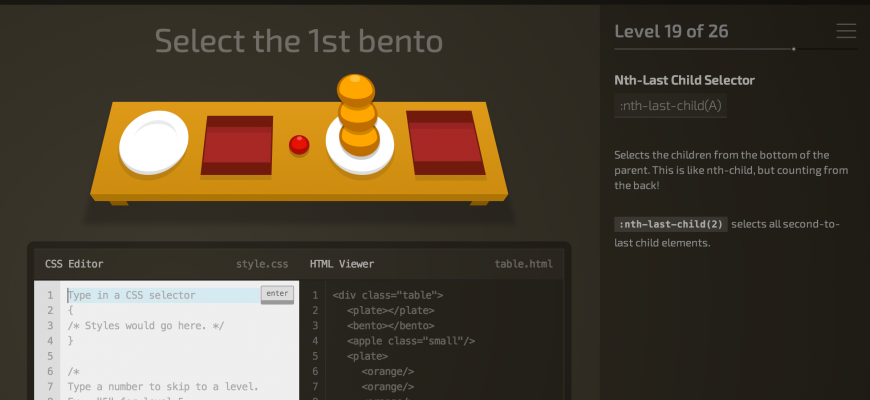

Css Dinner é um jogo que ensina seletores CSS de forma interativa, tipo um puzzle. Você precisa selecionar os elementos corretos usando CSS.
Ele é um dos melhores jogos para começar a aprender CSS já que transforma algo normalmente “decorado” em prática.